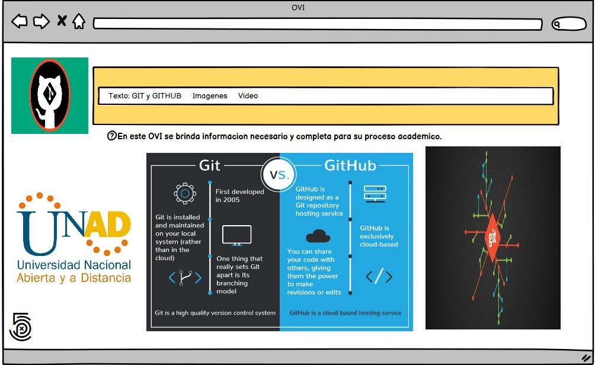

Objetivo del sitio (General)
Como objetivo se tiene, el brindar al 100% el manejo y almacenamiento de información virtual (Textos, imágenes, videos etc) a través de un OVI
(Objetivo virtual de información) el cual nos facilita nuevos conocimientos
creado principalmente para prevenir el aprendizaje presencial debido a la pandemia actual.
- Objetivo 1: Contar con toda la información necesaria para los estudiantes Y así sacar el mayor provecho a la información brindada.
- Objetivo 2: Hacer de OVI una herramienta de fácil manipulación, en la cual encontrar su información, imágenes, videos etc sea de sencillo.
- Objetivo 3: Con el paso del tiempo, implementar herramientas interactivas para un mayor interés de los estudiantes, que les guste la forma en la que se maneja el OVI, y se sientan seguridad en la información brindada.
Materiales.
Contenido: GIT y GITHUB
¿Para que sirve?
- GitHub aloja tu repositorio de código y te brinda herramientas muy útiles para el trabajo en equipo, dentro de un proyecto.
- Git es un sistema de control de revisiones, una herramienta para administrar el historial del código fuente.
- GitHub es un servicio de alojamiento para repositorios Git.
Entonces, no son lo mismo: Git es la herramienta, GitHub es el servicio para proyectos que usan Git .
Presentación del Contenido
Sobre Git
Como ya hemos dicho, Git es un sistema de control de versiones distribuido.
Git fue impulsado por Linus Torvalds y el equipo de desarrollo del Kernel de Linux.
Ellos estaban usando otro sistema de control de versiones de código abierto, que ya por aquel entonces era distribuido.
Todo iba bien hasta que los gestores de aquel sistema de control de versiones lo convirtieron en un software propietario.
Lógicamente, no era compatible estar construyendo un sistema de código abierto, tan representativo como el núcleo de Linux,
y estar pagando por usar un sistema de control de versiones propietario. Por ello,
el mismo equipo de desarrollo del Kernel de Linux se tomó la tarea de construir desde cero un sistema de versionado de software, también distribuido,
que aportase lo mejor de los sistemas existentes hasta el momento.
Sobre Github
Como se ha dicho, Github github.com es un servicio para alojamiento de repositorios de software gestionados por el sistema de control de versiones Git. Por tanto, Git es algo más general que nos sirve para controlar el estado de un desarrollo a lo largo del tiempo, mientras que Github es algo más particular: un sitio web que usa Git para ofrecer a la comunidad de desarrolladores repositorios de software. En definitiva, Github es un sitio web pensado para hacer posible el compartir el código de una manera más fácil y al mismo tiempo darle popularidad a la herramienta de control de versiones en sí, que es Git.
Razones para usar Github
1.Versionar tu código:
- Esto quiere decir guardar en determinado momento los cambios efectuados a un archivo o conjunto de archivos, con la oportunidad que tener acceso a ese historial de cambios, ya sea para regresar a una de esas versiones o para hacer comparaciones entre ellas. En este punto hay que destacar las ventajas frente a herramientas como Subversion y Perforce; que son usadas para este mismo fin, la principal es que no necesitarías montar, mantener, hacer copias de seguridad, etcétera a un repositorio o servidor para proteger el código que escribes, en este caso Github es el plataforma que cumple esta función. Lo único que necesitas es instalar Git en tu equipo, crear tu cuenta en Github y luego de realizar algunas configuraciones sencillas y ejecutar los comandos adecuados podrás enviar tu código a Github. Es importante mencionar que la visibilidad de los proyectos será público o privado según lo decidas.
2.Aprender y experimentar:
- Como muchos desarrolladores tienen de forma pública sus proyectos en Github es posible acceder a su código, leerlo, estudiarlo y aprender de el, e incluso podrías hacer cambios y experimentar sin afectar el código original, a esto último se le conoce como: hacer fork.
3.Contribuir
- Si luego de copiar un proyecto (hacer fork) haces ajustes que arreglan bugs o introducen una nueva funcionalidad, puedes proponerle al dueño del proyecto que integre tus cambios en su código. Eso lo puedes hacer enviando un pull request con todas tus modificaciones o novedades. Mediante un pull request el administrador del repositorio original tendrá la posibilidad de revisar, testear o escribir comentarios sobre alguna líneas de tu propuesta, y finalmente si considera interesante tu contribución podrá realizar la fusión de esta con el código original (a esto se le conoce como hacer merge) o en caso contrario rechazar los cambios propuestos.
4.Trabajo en equipo
- Github es el lugar perfecto para trabajar conjuntamente en una idea con un amigo o colega, después de crear tu proyecto podrás invitar a otros usuarios como colaboradores, permitiendo así que estos lean y escriban directamente sobre tu repositorio.
5.Precio
- Github, es completamente gratis e ilimitado para proyectos públicos, es decir que todos podrán ver el código que estos contienen (aunque tú siempre tendrás el control sobre quien subirá cambios), también ofrece la posibilidad de tener proyectos privados ilimitados, pero con la restrición de sólo 3 colaboradores por repositorio. Sin embargo si quieres tener participantes ilimitados en tus proyectos privados y acceso a herramientas avanzadas puedes adquirir una cuenta pro (que a la fecha de este artículo) cuesta 7 dólares mensuales.
